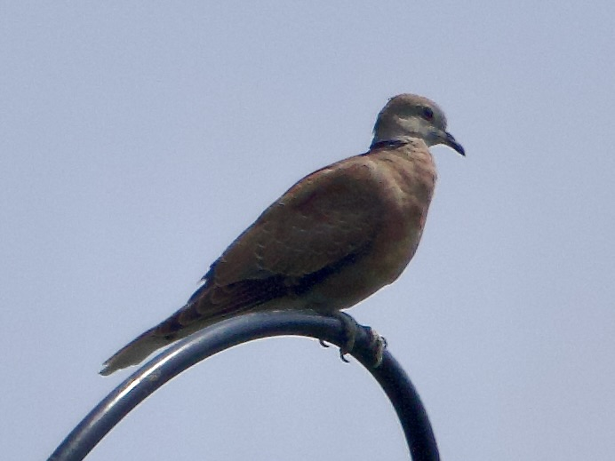

Red Collared Dove
Streptopelia tranquebarica
Order: Columbiformes
Family: Columbidae

A small, short-tailed dove with a black collar. Male has a greyish head and a dull red body.
Order: Columbiformes
Family: Columbidae

A small, short-tailed dove with a black collar. Male has a greyish head and a dull red body.